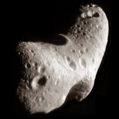

Comets are asteroid-like objects which are composed of ice, dust and rocky particles. The sizes of their nuclei vary between a few hundred meters to tens of kilometers in diameter; their visible tails can extend to above 150 million km in length. They originate from outside Neptune's orbit and are unmodified remnants of the formation of our solar system about 4.568 billion years ago. When comets approach the Sun the solar radiation and solar winds cause particles to sublimate and detach from the comet, forming a tail of particles which often makes them visible in the night sky even to the naked eye.
